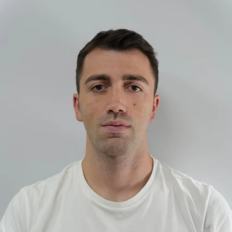

Roberto Capasso
Presidente e legale rappresentante
Laureato con lode in Strategic Management alla LUISS Guido Carli, unisce una solida formazione economica a un’esperienza concreta nella progettazione di interventi formativi finanziati con fondi europei e PNRR.
Lavora come Training Project Manager in un ente di formazione, dove ha curato la progettazione e l’attuazione di progetti formativi e ideato iniziative per hub di comunità dedicati alla valorizzazione del patrimonio culturale e all’occupabilità giovanile. In passato ha coordinato selezioni di personale per enti pubblici e collaborato alla redazione di bilanci di sostenibilità e all’analisi ESG di aziende.